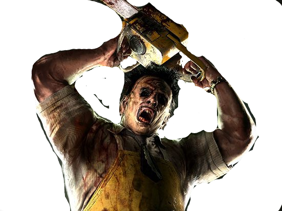

Top 10 Killers

In this page we'll be covering the top ten most known killers. Sorry if we do not have you're favorite on the list but maybe he/she/it would be the 11th (if we had a 11th) so don't despair but the important thing is that we have this page so you can find out more about you're favorite killers. Sorry if you think we got this wrong and if your fav wasn't on here we have some honorable metions at the end.
#1 Jason Voorhees
Jason is the deformed son of Pemala Voorhese who drowned at camp crystal lake. Angry at her son's death, Pemela went on a killing spree at the lake but was decapitated. Years later Jason rose from the grave and every year on friday the 13 comes to kill camp councelors to avenge his mother.Jason weilds the machete used to kill his mother.Jason appears in all the Friday the 13th movies except friday the 13th 5:A New Beginning which Roy Burns pretends to be Jason. also killed the most people in a slasher film (Kill count=183.)

![]()

#2 Freddy Krueger
Freddy was a child murderer until he got burned to death, while in the underworld ,Freddy was visited by three dream demons that granted him their power. Freddy then started to kill people in their dreams causing their deaths in the real world. Freddy main weapon is his glove with razor sharp blades on the finger. Freddy only has power in the "Dream Realm" but once you pull him into the real world he can be easily killed just like you and me.Freddy has no sympatthy watsoever so don't even try beging for mercy either accept your fate, or try and kill him.


#3 Micheal Myers
Miceal was a young boy who killed his sister ,Judith Myers, and 15 years later was sent to court but escaped to his hometown, Haddonfield where he would proceed to murder anyone with genetic connection to him(in short he wanted to kill his family.)Micheal will stop at nothing to kill his victims and is seemingly indstrucrible.Micheal will kill teenagers and people with coonection to his famly as well.


#4 Leatherface
Leatherface were's a mask made of human skin and murders people with a chainsaw and a sludge hammer, and then eats his victims along with his insane family, The Sawyers.We actually find out in one of the films that Leaterface is being PAID to spread fear across Texas.there are several flms dipicting leatherface, and many story lines.Leatherface is like the butcher of the family thats why he sometimes wear's a aprone and "prepares the course"


#5 Ghostface
Many refer to him as "Scream" but his "proper" name is Ghostface. In many of the movies ghostface is two people who take turns wearning the costume and killing people in the 4 movies the ghostface killer focuses on killing a high school student named Sidney Prescott.Ghostface usaully has a short ritual looking knife as well as a black robe and a white mask with a ghostly face.Ghostface's iconic killer costume is more widley known then it's movie .

:origin()/pre00/1dde/th/pre/f/2017/296/c/2/scream_tv_series_ghostface_1___png_by_captain_kingsman16-dbrhmax.png)
#6 Pennywise/IT
Kind of funny this guy is on #6 (because you know 666) and this guy is a demon!Pennywise the clown is the demon's main form. IT dwells in the town of derry in the Stephen king universe. in the book/films pennywise drags Bill's(the main character) brother Georgie down into the sewer, rippng of Georgie's arm. Bill and 6 other kids named the Losers club join Bill to find Georgie and kill Pennywise Pennywise kills children every 27 years.Fun fact pennywise's dance in the 2017 movie became a meme. IT feeds of of fear.Their are two movies adaptations of this book.


#7 Chucky
Charles Lee Ray is a notorious serial killer who after being shot several times transfers his soul into a Good Guy Doll who multiple ties tries to tranfer his soul back into a human body."Chucky" murdered multiple people in his doll body,chuck even gets a girlfriend, has a son, and is a well known killer doll. What's even creepeir is that "Child's Play" was based on a real life story.


#8 Saw
John kramer unlike most killers doesn't intentionally kill his victims. He wants to teach sinner(like murderers.)the value of life.He wants to see if his victims have the will to live throuout the franchise "Saw" has donned a rotting pig mask and has had lots of "apprentices".And we can't forget to mention his signature puppet Billy.Billy appears on TV sreens saying "Hello INSET NAME HERE I want to play a game." or rides up to the captves on a little red tricycle .


![]()

#9 Predator
The Predator is a alien speices called the Yuaji that hunts for a sport. For trophies the predator will rip out spines connected to skulls out of its prey. Famous for Major Alan "Dutch" Schaefer's encounter with it in the central american jungle.The predator is equiped with a shoulder cannon called a plasma caster, wrist blades a self disctruct system,and a few other weapons. They can also turn invisible or "cloak".they has a sworn rivalrey with the xenomorphs.


#10 Xenomorph
Xenomorphs is an odd species.First a queen lays a fleshy egg then a facehugger pops out and attaches itself to a host after laying it's egg. The facehugge then falls off and the wormlike chestburster bursts out of the chest of the host and in a few hours becomes a full grown Xenomorph.Xenomorphs will attack any life form on site.the xenomorph takes after its host. For example a xenomorph from a dog is called a runner.(check out the evolution of the xenomorph from Tell It Animated if you want to see more xenomorphs).

egg and facehugger

chestburster

Xenomorph

 ==
==
Honarable Mentions
Jack Torrance
The main killer in the infomous horror novel by Steven King (writer of IT)The Shining , ghosts from the hotel that jack works at tell him that he needs to kill his family and harnest his son's "shining( a telepathic ability)",and thats why he's gone physco.Jack is famous for his Famous line "Here's Jonnhy!".He says this while breaking through a bathroom door with an axe and peeres his face through at his wife.


The Thing
"The Thing" is an alien species that can assume the shape of any creature it can consumes.It can also create horrifying reincarnations of the creature it consumes, while also adapting the creatures memories, appearence,and behavior .With this ability "The Thing" can create a lot of mistrust, and deception which is how it assainates on it's victims.


Candy man
Candyman was the son of a slave who made a living painting. He also loves a white woman, but his lover decides to sat a mob on him.The mob ut of candyman's painting arm and replace it with a hook They also smear honey on him that attract bee's which sting him to death. Legend has it, if you say his name 5 times in the mirrior he will come and kill his summoner.


Hannibal Lector
As his name rymes with, Hannibal Lector is a cannibal who for one actually is a killer who spends most of his movie in prison Hannibals most iconic scene is were he is on this wheelchair thing with a staight jacket ,orange pants, and a specialized mask. Not much to say except don't to invite him to dinner.